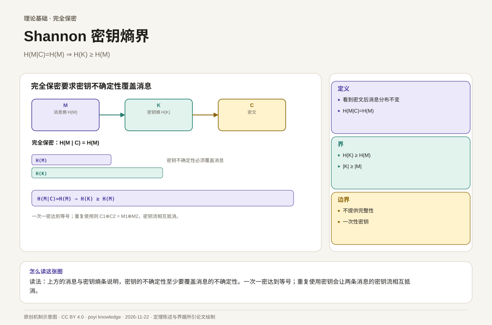
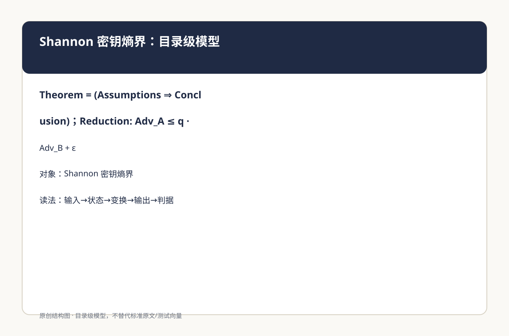

原理与机制
定理：香农密钥熵下界（Key Entropy Bound）。### 完全保密的定义
对任意消息 m、m' 与任意密文 c，若 P(M=m)>0 且 P(M=m')>0，则 P(C=c | M=m) = P(C=c | M=m')。也就是说，看到密文后，敌手对消息的后验分布与先验分布完全相同；等价地，H(M|C)=H(M)。这是信息论保密，不限制敌手计算能力。### 密钥熵界
Shannon 证明：若系统对有限消息空间实现完全保密，则 H(K) ≥ H(M)。因为 H(K) ≤ log|K|、H(M) 可接近 log|M|，所以密钥空间至少要和消息空间一样大。一次一密（one-time pad）达到等号：K 与 M 同长、均匀独立，C=K⊕M，且 K 只使用一次。### 证明直觉
固定密文 c。对每个可能的消息 m，必须存在至少一个密钥 k 把 m 映射到 c。若密钥数少于消息数，或密钥熵不足，则某些消息在给定 c 后概率变高，完全保密被破坏。严格证明用密钥 equivocation：H(M|C)=H(M)+H(K)−H(C)（在确定性加密且密钥独立时），再结合 H(C)≤log|C| 推出 H(K)≥H(M)。

为什么重要
它给出了“密钥能不能比消息短”的硬回答：在完全保密下不能。它解释了一次一密的长度代价，也解释了为什么流密码复用 nonce/密钥会灾难性失败：两条密文相异或，密钥流抵消，剩下两条消息的异或。### 与计算安全的区别
现代分组密码、公钥加密可以用短密钥保护长消息，因为安全性建立在计算假设上，敌手被限制为多项式时间。Shannon 界不适用于计算安全；它约束的是“无条件、完全保密”的系统。把“AES-256 密钥 256 位”与“消息 1 GB”直接比较，是混淆了两个安全模型。### 对认证的提醒
完全保密不等于完整性。一次性密钥可以隐藏消息，却不能阻止敌手翻转密文比特；主动攻击需要额外的 MAC 或认证加密。Shannon 的界只覆盖机密性。
应用与实例
1.明确目标：是完全保密，还是计算安全？2.若完全保密，计算 H(M)。密钥熵必须至少达到该值。3.检查密钥是否独立、均匀、一次性；重复使用直接破坏等号条件。4.若消息很长，一次性密钥不可扩展，应改用计算安全方案并明确假设。5.若需要完整性，另加 MAC；不要声称 OTP 提供认证。### 典型场景
- 一次性密码本：密钥长度、随机性、分发与销毁是全部安全边界。- 信息论密钥协商：协商出的密钥熵必须覆盖要加密的消息熵。- 教学：用 C1⊕C2=M1⊕M2 演示两次一密的灾难。

边界与攻击面
1.只适用于完全保密。计算安全方案可以违反 H(K)≥H(M)，因为它们不要求敌手无限时间。2.密钥必须一次性。重复使用同一密钥流，C1⊕C2=M1⊕M2，完全保密立即失效。3.密钥必须独立于消息且分布正确。低熵、偏置或可预测密钥不满足定理前提。4.不提供完整性。OTP 可被比特翻转；敌手无需恢复明文就能篡改。5.有限消息空间。无限消息空间需要更细的率/容量分析；不能直接套用有限情形的等式。6.密钥分发是现实瓶颈。定理假设双方已共享密钥；它不解决认证、存储和销毁问题。
历史与背景
Vernam 在 1917 年提出一次性密钥流加密；Shannon 在 1945 年的保密报告与 1949 年《Communication Theory of Secrecy Systems》中给出完全保密定义与密钥熵界，证明一次性密钥的必要性。### 现代回声
信息论保密仍是量子密钥分发、物理层安全和无条件安全研究的语言。计算安全成为主流后，Shannon 界更多充当“边界条件”：当有人声称“密钥比消息短且无条件安全”时，用 H(K)≥H(M) 检验。
技术参数与复算边界
该条目的形式模型是 (\Pr[\mathrm{Bad}_A(\lambda)]\le \varepsilon(\lambda))。输入：输入：香农密钥熵下界的公开参数、密钥/随机数与消息；变量说明：Bad 为归约中定义的失败事件，ε 为可忽略函数。 预期输出：按 香农密钥熵下界 的规范执行后得到可验证的输出或可比较的优势界。 复算必须给出输入、步骤、输出和单位；示例只演示流程，不替代标准测试向量。
复杂度由密钥长度、分组/状态规模、轮数、随机数质量和敌手模型共同决定；参数越界、版本差异与实现侧信道都可能使公式结论失效。已登记限制：该条目只给出形式模型与可复算步骤，不声称已完成生产实现、侧信道认证或第三方安全评估。
逐步示例与核验
形式模型与复算步骤
[\Pr[\mathrm{Bad}_A(\lambda)]\le \varepsilon(\lambda)]
香农密钥熵下界的公开参数、密钥/随机数与消息；变量说明：Bad 为归约中定义的失败事件，ε 为可忽略函数。1.定义失败事件。2.构造归约把攻击者转成困难问题求解器。3.证明失败概率上界。边界：公式只覆盖已登记的参数与假设；参数取值、标准版本和实现细节仍以来源为准。
参考出处
- Wikipedia search entry for 香农密钥熵下界. https://zh.wikipedia.org/w/index.php?search=%E9%A6%99%E5%86%9C%E5%AF%86%E9%92%A5%E7%86%B5%E4%B8%8B%E7%95%8C
- Handbook of Applied Cryptography (Menezes, van Oorschot, Vanstone). https://www.cacr.math.uwaterloo.ca/hac/